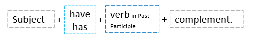

Affirmative sentences
The Present Perfect Simple helps us to express different things, but in this lesson we will focus on one function.
We use the Present Perfect to talk about past experiences up to this moment. For example:
- I have seen a baby koala. (at some point in the past of my life)
- She has been in Egypt.
Here the exact time of the event is not important, so do not use specific past time expressions such as yesterday, at 3:00 p.m., in 2010, etc.
The Present Perfect is formed by two parts. Look at more examples:

Don’t get confused, the verb have is an auxiliary for this tense. Then, we have the Past Perfect form of the main verb (in these examples are travel-traveled and see-seen). So, the structure is:

It is possible to contract the personal pronouns with the verb have: I've traveled, You've traveled, She's traveled, We've traveled, They've traveled.